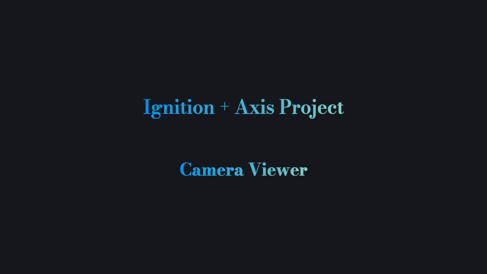
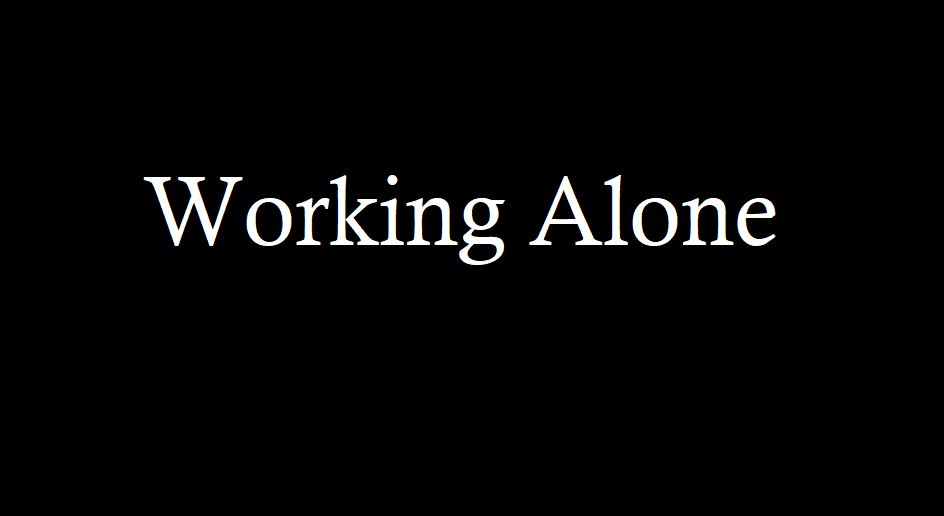

A generetive AI project to create lesson plans for teachers

An Ignition project to link an Axis camera with the Ignition perspective
Youtube

A Deep Learning model integrated into Ignition to predict failures of a sight or sights. Have a look!
Youtube

A Working Alone tracker designed in Ignition using SQL, Python, and Ignition Perspective
Youtube